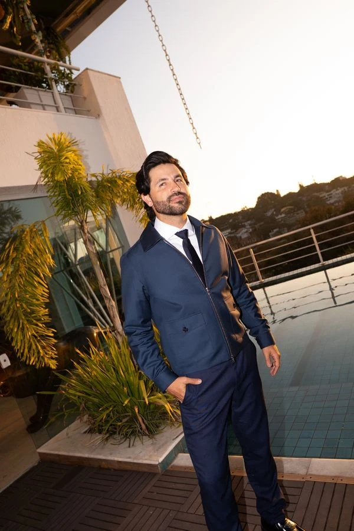

Leitura
Começamos pela face como um todo: proporção, contexto e intenção clínica.

Além do Óbvio é uma imersão Full Face para profissionais que querem observar, planejar e conduzir com mais intenção — em São Paulo, nos dias 4, 5 e 6 de dezembro.
Solicitar uma vagaUma sala desenhada para sair do “o que fazer” e entrar no “por que, quando e para quem”.
Leitura Full Face para conectar pontos antes de qualquer conduta.
Raciocínio clínico aplicado em casos e prática com pacientes reais.
Discussão direta para transformar observação em plano.



Começamos pela face como um todo: proporção, contexto e intenção clínica.
Organizamos a decisão com critério, antes de partir para a execução.
O aprendizado ganha corpo na prática com pacientes reais.
O ponto de partida para olhar a face em conjunto e construir uma análise orientada por contexto.
Discussão e organização das decisões que antecedem a condução de cada caso.
Uma etapa para aproximar o raciocínio do contexto real de atendimento.

O critério da página é o mesmo da imersão: não atribuímos frases sem a fonte original.
Para conhecer materiais e referências disponíveis sobre experiências anteriores, fale diretamente com o time comercial.Falar com o timeA imersão acontece em São Paulo, nos dias 4, 5 e 6 de dezembro.
A turma é limitada a 12 vagas.
Sim. A programação inclui prática com pacientes reais.
Use o botão de contato. O time comercial compartilhará as informações disponíveis e orientará os próximos passos.
Converse com o time sobre a próxima turma de Além do Óbvio e receba as informações de inscrição.
Solicitar uma vaga